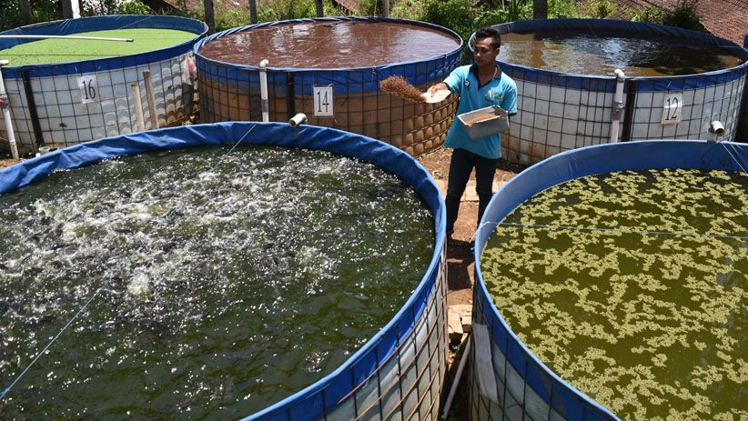

Kolam Bioflog FishGator

Ternak lele bioflok ini mulai muncul pada tahun 2014. Kemudian meledak pada tahun 2015. Lalu surut dan stagnan.
Karena sudah banyak yang rugi (bangkrut).
Kemudian berkembang lagi, karena sudah mulai banyak telaah – telaah ilmiah yang dilakukan. Sampai sekarang masih berlanjut dan riset – riset masih banyak dilakukan.
Tapi, sudah banyak orang yang mulai ragu terhadap bioflok ini.
Meskipun dalam keadaan terdesak, kita harus bisa berfikir logis dan jernih. Jangan terburu – buru mengambil keputusan yang sifatnya transaksional (keluar uang) ketika dalam keadaan bingung, pusing dan hampir frustasi.
Karena ketika fikiran sudah jernih, biasanya akan ada sedikit rasa penyesalan. Selanjutnya mau tidak mau harus melanjutkan karena sudah terlanjur kecemplung.
Jadinya, keputusan yang diambil dijalankan dengan setengah – setengah. Atau ditengah jalan, kembali ke pola pemeliharaan yang lama.